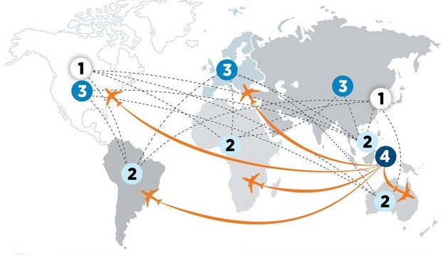

Lors de la fabrication, chaque matériau est envoyé à l’endroit ou il sera utilisé pour produire les différents composants de l’ordinateur, en général les matériaux sont transportés par bateaux dans des conteneurs ou encore par avion ce qui alourdit de plus en plus le bilan carbone d’un ordinateur. Le processus de fabrication d’un ordinateur n’est pas réalisé en un seul et même point, chaque composant sera produit dans un certains pays avant d’être envoyé pour l’assemblage dans un autre et ainsi de suite. Un ordinateur fait en moyenne 4 tours du monde entre l’extraction de ses matières premières et son utilisation finale. Encore une fois lors de la fabrication des différents composants d’un ordinateur, une grande quantité d’eau sera nécessaire pour refroidir les machines utilisées par exemple. Cette fois ci en plus de l’eau de nombreux produits chimiques seront utilisés lors du processus de fabrication (22kgs pour un ordinateur). 